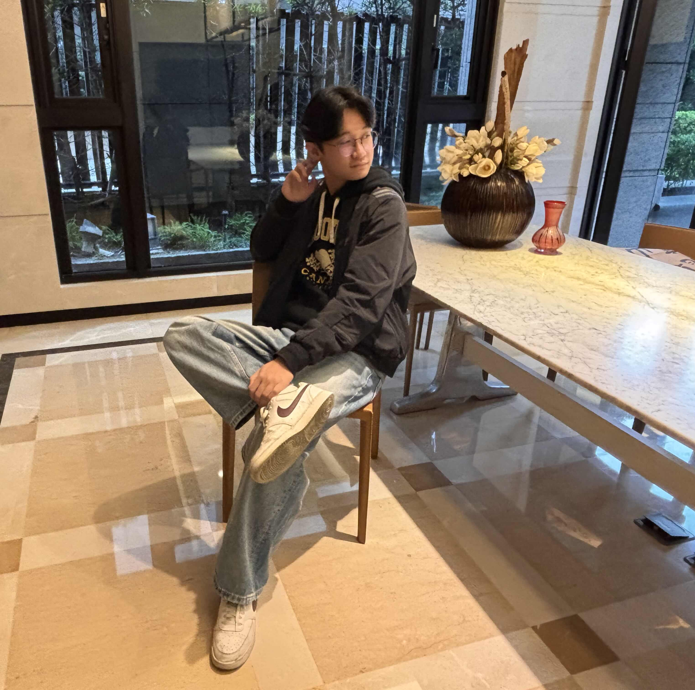

團隊成員
我們是一個由四位大安高工電機科的學生組成的團隊
-
 組長：謝嘉安負責專題的整體規劃與協調，統籌團隊資源，確保專題進度順利進行。
組長：謝嘉安負責專題的整體規劃與協調，統籌團隊資源，確保專題進度順利進行。
擅長系統整合與專案管理。 -
 組員：何承翰負責前端開發與使用者介面設計，打造流暢的使用者體驗。
組員：何承翰負責前端開發與使用者介面設計，打造流暢的使用者體驗。
專注於網頁設計與互動功能實作。 -
組員：張立澄負責後端系統開發與資料庫管理，確保系統穩定運行。
專長於伺服器架設與API設計。 -
 組員：廖宥銨負責AI模型訓練與演算法優化，提升虛擬試衣的準確度與效果。
組員：廖宥銨負責AI模型訓練與演算法優化，提升虛擬試衣的準確度與效果。
專注於機器學習與影像處理。
研究動機
當我們在網購時,時常擔心到底合不合身,適不適合自己
所以我們希望能夠利用照片換衣來解決這個問題
讓使用者能夠在家中虛擬試穿服裝